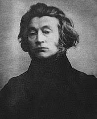

Adam Mickiewicz
Adam Bernard Mickiewicz (ur. 24 grudnia 1798 w Zaosiu lub Nowogródku, zm. 26 listopada 1855 w Stambule) – polski poeta, działacz polityczny, publicysta, tłumacz, filozof, działacz religijny, mistyk, organizator i dowódca wojskowy, nauczyciel akademicki.
Obok Juliusza Słowackiego i Zygmunta Krasińskiego uważany za największego poetę polskiego romantyzmu (zaliczany do grona tzw. Trzech Wieszczów) oraz literatury polskiej, a nawet za jednego z największych na skalę europejską. Określany też przez innych, jako poeta przeobrażeń oraz bard słowiański.

Inwokacja
Litwo! Ojczyzno moja! Ty jesteś jak zdrowie,
Ile cię trzeba cenić, ten tylko się dowie,
Kto cię stracił. Dziś piękność twą w całej ozdobie
Widzę i opisuję, bo tęsknię po tobie
Panno święta, co Jasnej bronisz Częstochowy
I w Ostrej świecisz Bramie! Ty, co gród zamkowy
Nowogródzki ochraniasz z jego wiernym ludem!
Jak mnie dziecko do zdrowia powróciłaś cudem,
(Gdy od płaczącej matki pod Twoją opiekę
Ofiarowany, martwą podniosłem powiekę
I zaraz mogłem pieszo do Twych świątyń progu
Iść za wrócone życie podziękować Bogu),
Tak nas powrócisz cudem na Ojczyzny łono.
Tymczasem przenoś moją duszę utęsknioną
Do tych pagórków leśnych, do tych łąk zielonych,
Szeroko nad błękitnym Niemnem rozciągnionych;
Do tych pól malowanych zbożem rozmaitem,
Wyzłacanych pszenicą, posrebrzanych żytem;
Gdzie bursztynowy świerzop, gryka jak śnieg biała,
Gdzie panieńskim rumieńcem dzięcielina pała,
A wszystko przepasane jakby wstęgą, miedzą
Zieloną, na niej z rzadka ciche grusze siedzą.
Inne utwory warte uwagi:
-Dziady
-Oda do młodości
-Romantyczność
-Sonety krymskie
-Reduta Ordona